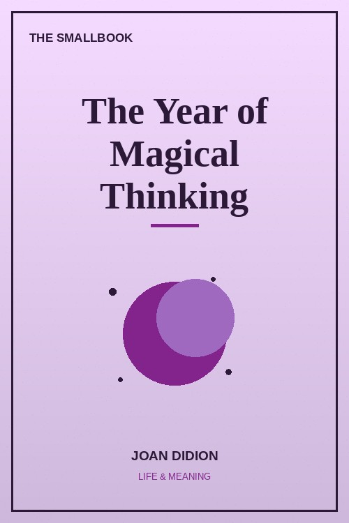

Library › Authors › Joan Didion
Books by Joan Didion
Joan Didion has one book in the library. Every book here is read down to the big idea, the lessons, the lines worth keeping and the actions worth taking. Start with the summary, then buy the full book if it earns a place on your shelf.

The Year of Magical Thinking
2005 · 8 min · 8 lessons
Joan Didion's husband died at the dinner table while their daughter lay in intensive care. This is her report from inside the year that followed, written with a scalpel.
On 30 December 2003, John Gregory Dunne died of a heart attack as Joan Didion was making dinner. Their daughter Quintana was unconscious in an ICU across the city. Joan Didion, the great anatomist of American self deception, turned her instruments on her own grief: the magical thinking of the title, keeping his shoes because he would need them when he returned, the refusal of the autopsy report, the geography of a city booby trapped with shared memory. The book is unsparing about how the sane narrate madness, and...
Lessons in the summary
- Magical Thinking Is Grief's Operating System
- The Vortex Effect: A City Booby Trapped With Memory
- Grief Versus Mourning: The Passive and the Active
- You Sit Down to Dinner and Life as You Know It Ends
- The Autopsy Report She Could Not Read
- Letting the Dead Be Dead
- The Memoir's Form Enacts the Disorder It Describes
- Control Was Her Profession, and Grief Retired It
Lines worth keeping
- Life changes fast. Life changes in the instant. You sit down to dinner and life as you know it ends.
- Grief, when it comes, is nothing we expect it to be.
- I know why we try to keep the dead alive: to keep them with us.
Questions Joan Didion helps answer
Read nearby authors next
- Viktor E. Frankl 2 books
- Elie Wiesel 1 book
- Frederick Douglass 1 book
- Jon Krakauer 1 book
- Khaled Hosseini 1 book
- Matt Haig 1 book
- Michael Ovitz 1 book
- Mitch Albom 1 book